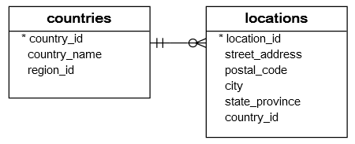
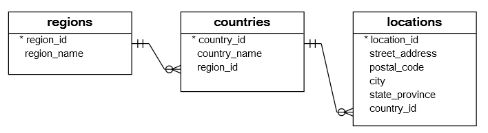

Subqueries and views
Wat is een subquery?
SELECT first_name, last_name, employees.department_id,
departments.department_id, department_name
FROM employees INNER JOIN departments
ON departments.department_id = employees.department_id
WHERE departments.department_name = 'Purchasing';subquery - voorbeeld 1
Geef me de verschillende jobtitels van departement ‘Purchasing’.

Subquery voorbeeld 1
Geef me de verschillende jobtitels van departement ‘Purchasing’.
SELECT job_title, department_name
FROM employees e INNER JOIN departments d ON d.department_id = e.department_id
INNER JOIN jobs j ON j.job_id = e.job_id
WHERE d.department_name = 'Purchasing';DISTINCT
LEFT JOIN (& RIGHT JOIN)
- Definitie: Geeft alle rijen uit de linkertabel terug, samen met de overeenkomstige rijen uit de rechtertabel. Als er geen overeenkomst is, worden de resultaten voor de rechtertabel NULL.
- Gebruik: Nuttig om te zien welke rijen in de linkertabel geen overeenkomstige rijen in de rechtertabel hebben.
SELECT kolommen
FROM tabel1
LEFT JOIN tabel2
ON tabel1.gemeenschappelijke_kolom = tabel2.gemeenschappelijke_kolom;LEFT JOIN voorbeeld

LEFT JOIN voorbeeld
SELECT c.country_name, c.country_id, l.country_id, l.street_address, l.city
FROM countries c LEFT JOIN locations l ON l.country_id = c.country_id
WHERE c.country_id IN ('US', 'UK', 'CN')Oefening: lijst alle landen (naam) die geen locatie hebben in de database:
SELECT country_name
FROM countries c LEFT JOIN locations l ON l.country_id = c.country_id
WHERE l.location_id IS NULL
LEFT JOIN voorbeeld 2

LEFT JOIN voorbeeld 2
SELECT r.region_name, c.country_name, l.street_address, l.city
FROM regions r LEFT JOIN countries c ON c.region_id = r.region_id
LEFT JOIN locations l ON l.country_id = c.country_id
WHERE c.country_id IN ('US', 'UK', 'CN');FULL OUTER JOIN
- Definitie: Geeft alle rijen terug van beide tabellen, ook wanneer er geen overeenkomst is in een van de tabellen.
- Gebruik: Nuttig om alle overeenkomsten en verschillen tussen twee tabellen te zien.
SELECT kolommen
FROM tabel1
FULL OUTER JOIN tabel2
ON tabel1.gemeenschappelijke_kolom = tabel2.gemeenschappelijke_kolom;FULL OUTER JOIN voorbeeld
We maken enkele tabellen aan om dit voorbeeld uit te werken: We creëren de tabel ‘mand’ en tabel ‘fruit’, waarbij we willen bijhouden welk stuk fruit in welke mand zit.
CREATE TABLE mand (
mand_id INTEGER PRIMARY KEY,
mand_naam VARCHAR (255) NOT NULL
);
CREATE TABLE fruit (
fruit_id INTEGER PRIMARY KEY,
fruit_naam VARCHAR (255) NOT NULL,
mand_id INTEGER
);
INSERT INTO mand (mand_id, mand_naam)
VALUES
(1, ‘A’),
(2, ‘B’),
(3, ‘C’);
INSERT INTO fruit (
fruit_id,
fruit_naam,
mand_id
)
VALUES
(1, ‘Appel’, 1),
(2, ‘Sinaasappel’, 1),
(3, ‘Banaan’, 2),
(4, ‘Aardbei’, NULL);
Alle manden met fruit, fruit dat niet in een mand zit en manden zonder fruit -> FULL OUTER
SELECT
mand_naam,
fruit_naam
FROM fruit FULL OUTER JOIN mand ON mand.mand_id = fruit.mand_id;
Lege mand die geen fruit heeft:
SELECT
mand_naam,
fruit_naam
FROM
fruit
FULL OUTER JOIN mand ON mand.mand_id = fruit.mand_id
WHERE
fruit_naam IS NULL;
SELF JOIN
- Definitie: Een SELF JOIN is een normale join, maar dan wordt de tabel met zichzelf gejoined, alsof het twee verschillende tabellen waren.
- Gebruik: Nuttig om relaties binnen dezelfde tabel te vergelijken.
SELECT a.kolom_name, b.kolom_name
FROM tabel a, tabel b
WHERE a.gemeenschappelijke_kolom = b.gemeenschappelijke_kolom AND voorwaarde;SELF JOIN voorbeeld
We kijken na welke employee aan welke manager rapporteert:

SELF JOIN voorbeeld
We kijken na welke employee aan welke manager rapporteert:
SELECT e.first_name || ' ' || e.last_name AS employee,
m.first_name || ' ' || m.last_name AS manager
FROM employees e INNER JOIN employees m ON m.employee_id = e.manager_id
ORDER BY manager;SELF JOIN voorbeeld
De CEO heeft geen manager maar deze willen we ook graag in het resultaat. Hoe doen we dit?
SELECT e.first_name || ' ' || e.last_name AS employee,
m.first_name || ' ' || m.last_name AS manager
FROM employees e ...SELECT
e.first_name || ’ ’ || e.last_name AS employee,
m.first_name || ’ ’ || m.last_name AS manager
FROM
employees e
LEFT JOIN
employees m ON m.employee_id = e.manager_id
ORDER BY manager;